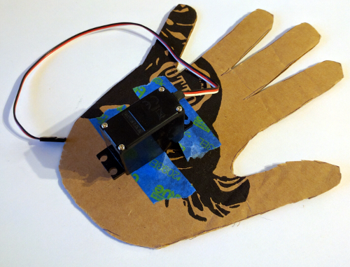
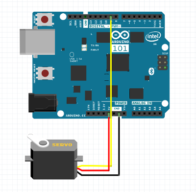
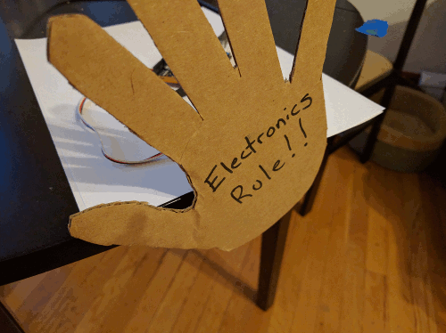

Servo Hand
A servo is a type of motor that we can use to make precise movements back and forth. In this project we will use a servo motor to make an automatic waving machine!
In addition to the usual parts, for this project you will need:
For this project you will need to make a cut out of your hand. Be sure to decorate it or include some sort of unique message.
- Tape your hand cutout to the end of the servo motor. Make sure the servo motor will still be able to move freely with your hand taped on.

- Wire up the servo motor to the Arduino using the circuit diagram below. You will need to use jumper wires to go between the servo motor and the Arduino pins.

- We can use the following code to make the servo motor swing back and forth. The servo only accepts values between 0 and 180 degrees.
- Click the green flag and see if you hand starts waving!

- Now see how you can make the wave better.
Can you:
- Reduce the distance that the hand waves back and forth?
- Figure out a way to slow down the hand wave?
- Advanced: Record a message and play it along with the hand wave?
- Advanced: Incorporate the light sensor circuit and only wave when it gets light or dark?